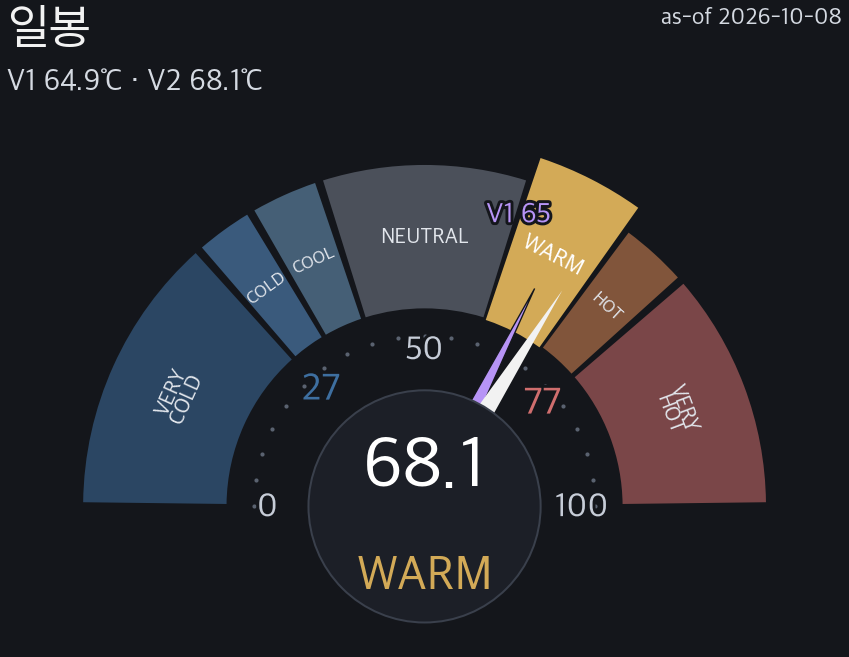
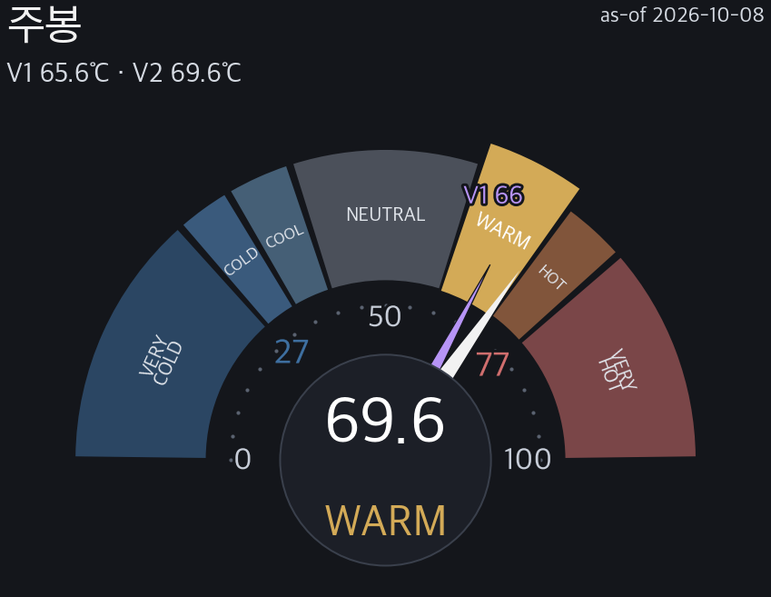
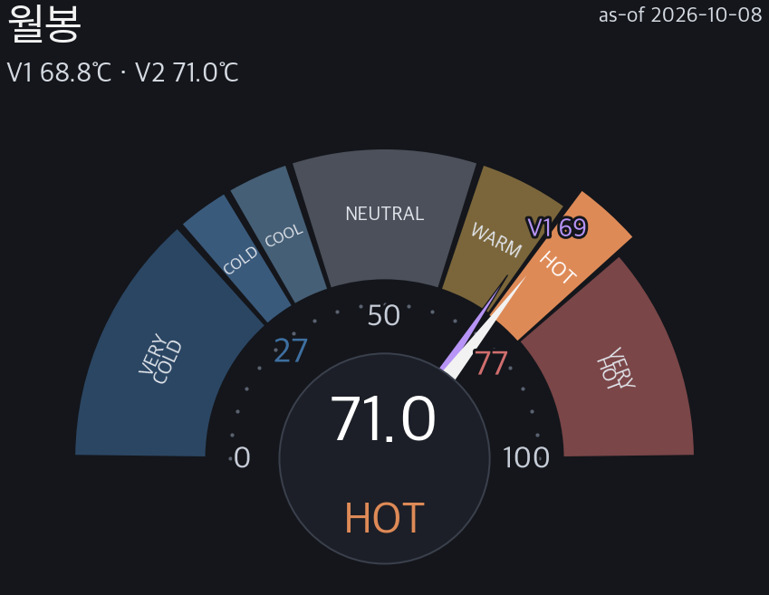
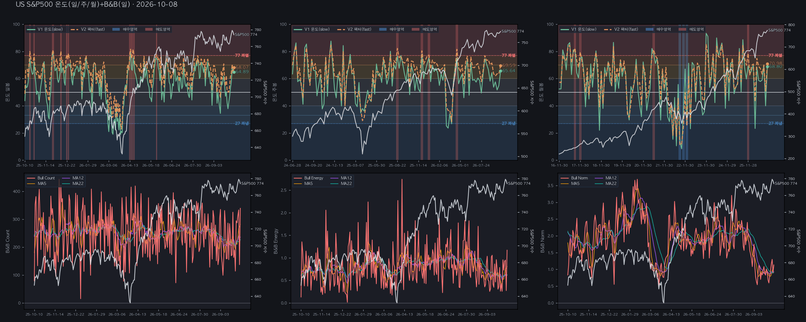
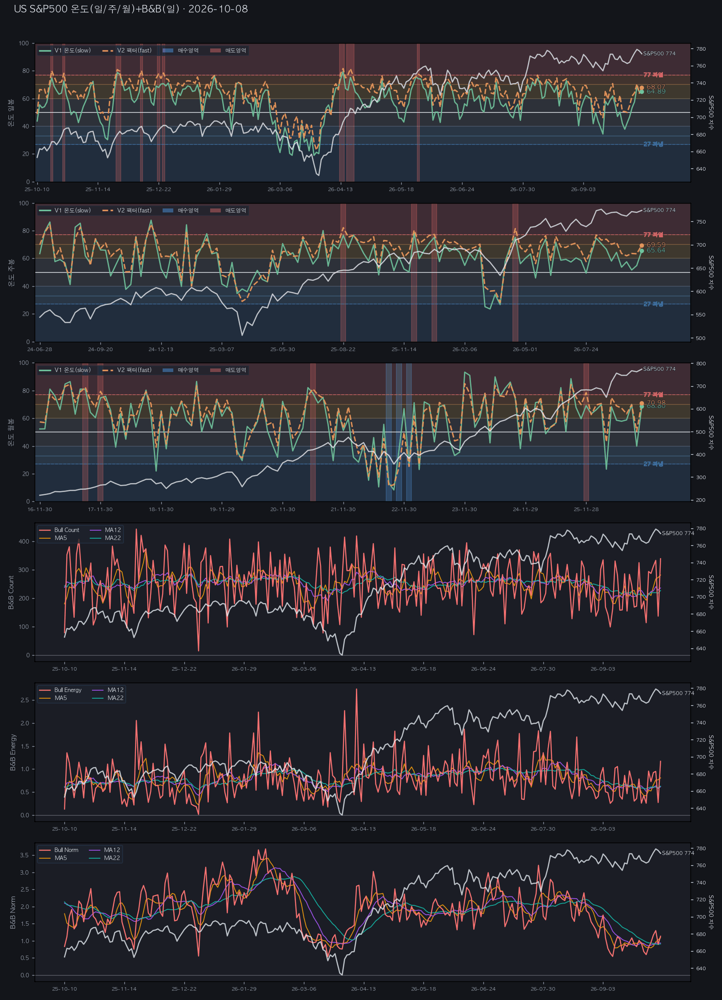
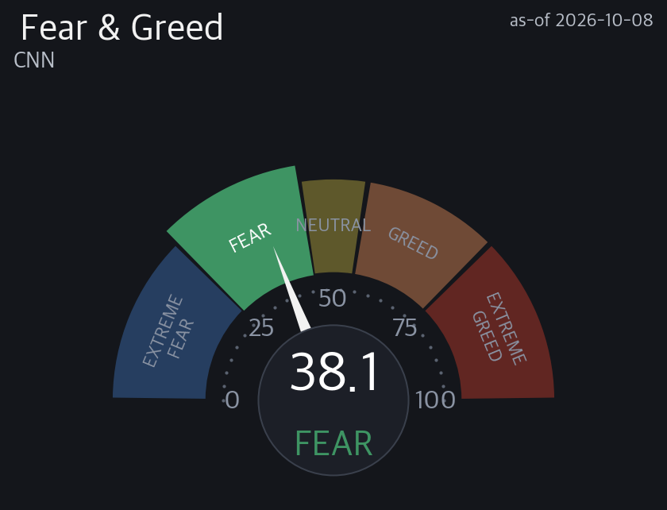
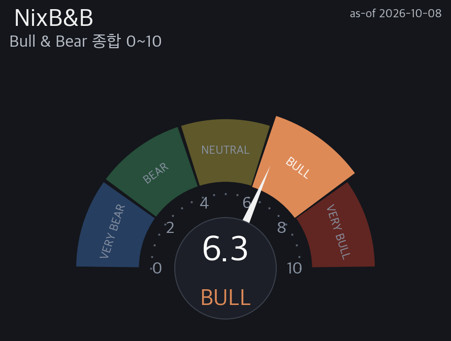
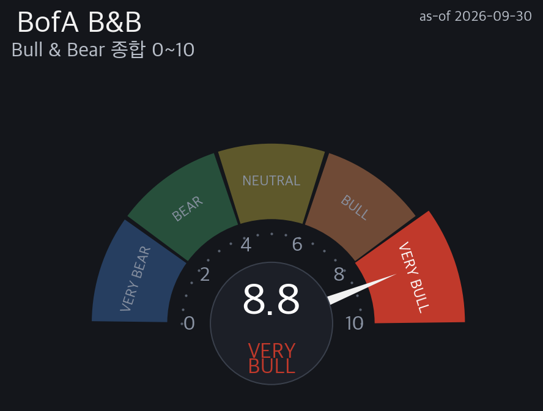
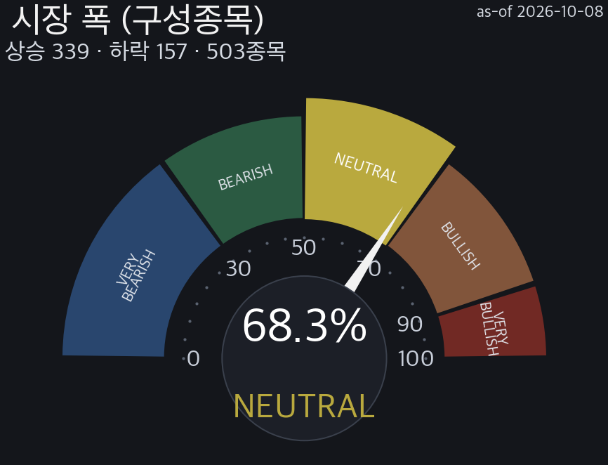

| F&G 존 | 이후 상승 up% | edge(pp) | n | 표본 비중 |
|---|---|---|---|---|
| Extreme Fear(극단공포) | 100.0% | ▲ +20.2 | 41 | 17% |
| Fear(공포) ◀ 현재 | 93.2% | ▲ +13.4 | 88 | 37% |
| Neutral(중립) | 52.6% | ▼ -27.2 | 38 | 16% |
| Greed(탐욕) | 66.2% | ▼ -13.6 | 71 | 30% |
| baseline(조건 없음) | 79.8% | 0.0 | 238 | 100% |
| 게이지 | 현재값 | 발행처 규칙 | 상태 | 발행처 근거 |
|---|---|---|---|---|
| CNN F&G 0~100 | 38.11 | 밴드 0–25 극단공포 / 25–45 공포 / 45–55 중립 / 55–75 탐욕 / 75–100 극단탐욕 — 극단 구간(<25 / ≥75) 진입이 역발상 관심 신호 | ○ 미발동 — 극단 구간 밖 | 발행처는 조건부 수익률·표본수·CI 를 발행하지 않음(F&G 의 알려진 약점) — 검증은 우리 §1c 존별 edge 표 |
| BofA B&B 0~10 | 8.8 | > 8.0 = 매도 신호 · < 2.0 = 매수 신호 · 신호 유효기간 통상 1~3개월 | ● 발동 · 매도 — > 8.0 매도 신호 발동 | 발행처 공표 근거 · 매도(>8) 17회 → 3개월 평균 −2~3% · 최대 −15~20% · 매수(<2, 2002~) 20회 → 3개월 중앙값 US +5.4% · 글로벌 +7.6% |
| NixB&B 0~10 | 6.31 | 🔒 자체 산식·가중 비공개 (값·등급 공개) | 판정 미표기 (자체 임계 🔒) | 자체 산출 — 발동 판정 미표기 · 외부 규칙 카운트의 분모에서 제외 |
| 지평 | Sell 도달 | Buy 도달 | Sell 리드 | Buy 리드 | n |
|---|---|---|---|---|---|
| 1달·ATR22(비대칭) | 49.9% | 50.3% | 11.3일 | 7.4일 | 4660 |
| 분기·ATR54(대칭) | 60.6% | 42.0% | 25.0일 | 19.5일 | 4628 |

| 지평 | 상승/하락 | 상승 | 하락 | 기저·edge | 중앙값 | P10~P90 | 5%↓ | neff |
|---|---|---|---|---|---|---|---|---|
| h5 | 60% | 40% | 기저 60% ±+0.0pp 동률 | +0.39 | -2.0~+2.0 | 1% | 248 | |
| h12 | 63% | 37% | 기저 65% ▼-2.0pp 열위 | +0.81 | -2.9~+3.1 | 7% | 103 | |
| h22 | 67% | 33% | 기저 68% ▼-1.0pp 열위 | +1.33 | -4.0~+4.3 | 13% | 56 | |
| h54 | 74% | 26% | 기저 76% ▼-2.0pp 열위 | +2.94 | -5.1~+7.4 | 26% | 22 | |
| 위기 제외 대조 — 현재존(WARM) 상승확률, 2008 GFC(2008-01~2009-06) · 2020 코로나(2020-02~2020-05) · 2022 긴축(2022-01~2022-12) 진입일 제외: h5 60% (포함시 60%) · h12 64% (포함시 63%) · h22 68% (포함시 67%) · h54 75% (포함시 74%) · n 1225 · 값이 비슷하면 위기 몇 번이 만든 숫자가 아니라는 뜻(AAII 관행) | ||||||||
| 방법 · 방향 | 신호 n | 적중률 | Brier | Brier(기저) | BSS |
|---|---|---|---|---|---|
| M1 고정존 · 바닥(저점) | 84 | 85.7% | 0.133 | 0.133 | ▲+0.002 우위 |
| M1 고정존 · 고점 | 77 | 23.4% | 0.192 | 0.181 | ▼-0.055 열위 |
| M2 동적존 · 바닥(저점) | 105 | 83.8% | 0.144 | 0.137 | ▼-0.058 열위 |
| M2 동적존 · 고점 | 298 | 22.5% | 0.178 | 0.178 | ▼-0.002 열위 |
| 종합 (전 방법) | 564 | 43.4% | 0.167 | 0.164 | ▼-0.018 열위 |
.venv/bin/python3 scripts/nix_forecast_scorecard.py --indexes us500 · 용어(Brier·BSS)·수식은 §G.| 시나리오 | 확률 | 목표·수준 | 파생 근거 |
|---|---|---|---|
| Bull — 상방 우세 | 36.7% 낮음기저 36.3%edge ▲+0.4pp 우위n 455(neff 20) | 800.6 (+3.44%) | 트리거: 1차 Sell 도달(위) · 1차 Buy 미이탈 — 1차 788.1 · 2차 802.2 · 창 22거래일 · 과거 WARM존 1239봉 중 455봉 · 도달 중앙 12일 |
| Base — 팬 내 횡보 | 26.9% 낮음기저 27.4%edge ▼-0.5pp 열위n 333(neff 15) | 786.2 (+1.58%) | 트리거: 양방 미도달(횡보) 또는 양방 도달(왕복·방향 미확정) · 창 22거래일 · 과거 WARM존 1239봉 중 333봉 |
| Bear — 하방 우세 | 36.4% 낮음기저 36.3%edge ▲+0.1pp 우위n 451(neff 20) | 761.4 (-1.62%) | 트리거: 1차 Buy 이탈(아래) · 1차 Sell 미도달 — 1차 763.5 · 2차 753.1 · 창 22거래일 · 과거 WARM존 1239봉 중 451봉 · 도달 중앙 6일 |
| 판정 | 무효화 조건 (관측치·임계·지속) | 현재 ↔ 문턱 거리 | 확인 시점·주기 | 틀리면 — 상정 손실·조치 |
|---|---|---|---|---|
| Bull (상방 우세) | 창 22거래일 안에 고가가 1차 Sell 788.1 미도달 · 또는 저가가 1차 Buy 763.5 를 먼저 이탈 | 788.1 (+1.83%) | 매 거래일 종가 · 창 만료 22거래일차 · 과거 도달 중앙 12일 | Bear 경로 실현 시 과거 동일 결과의 22일 뒤 종가 중앙 -1.62% (1차 Buy 763.5) |
| Base (팬 내 횡보) | 1차 Sell 788.1 또는 1차 Buy 763.5 중 한쪽 도달(먼저 닿는 쪽) | 위 788.1 (+1.83%) / 아래 763.5 (-1.34%) | 매 거래일 종가 · 창 만료 22거래일차 | 횡보 전제 폐기 — 도달한 방향 시나리오로 전환(가중 기대값 재산출) |
| Bear (하방 우세) | 창 22거래일 안에 저가가 1차 Buy 763.5 미이탈 · 또는 고가가 1차 Sell 788.1 을 먼저 도달 | 763.5 (-1.34%) | 매 거래일 종가 · 창 만료 22거래일차 · 과거 도달 중앙 6일 | Bull 경로 실현 시 과거 동일 결과의 22일 뒤 종가 중앙 +3.44% (1차 Sell 788.1) |
| 공통 전제 (현재 존 WARM) | V2 가 현재 밴드 WARM 60–70 를 이탈 — 고점선·바닥선 돌파 시 반전 발화 | 고점선 77 까지 +8.9 · 바닥선 27 까지 -41.1 | 매 거래일 온도 갱신 | 정량층의 조건부 전제(현재 존 표본)가 무효 — 새 존 표본으로 확률 재산출 |
WARM 68.07℃ · 고점=매도 경계 — 온도 고점 후 평균회귀(주로 장기).
1차 고점 +1.83% / 1차 저점 -1.34%. 현재존 기대수익 +0.42% (전 존 최저·dim). 강건성 완전 통계가중.
포지셔닝 컨텍스트(US 공통·스냅샷 파생 · 기준 2026-10-08): F&G 38.11 · NixB&B 6.31/10 (US) · BofA 8.8/10 (글로벌 · 2026-09-30 D+8 기준 · 다음 발표 예정 2026-10-08 D-DAY~2026-10-09 D-1(추정)). 가격·심리·포지셔닝 다른 축.
과열은 타이밍 신호가 아님(WARM 존 기대수익 최저 +0.42%). 확률적 참고 — 투자권유(매수·매도·비중) 아님.
온도 V1/V2: 가격 과열/과냉 0~100℃. 높을수록 뜨겁·후행. V2 낮을수록 저점권·높을수록 고점권.
팬(Sell/Buy): 우리 방법론이 본 고점(Sell·위)/저점(Buy·아래) 목표. 1차=median(≈50% 도달)·×3=최대. ★Sell·Buy 1차 모두 median이라 %거리 차이는 방향 신호 아님(대응책은 존·고점거동으로 판단).
완전 통계가중 vs 방향 참고: 온도 존이 향후 낙폭을 순서대로 나누는지 3조건 검증. 다 통과=완전 가중, 하나라도 미달=방향+coarse만.
고점 지속 vs 매도 경계: 온도 고점 후 반응. 지속=매도 신호 아님(bull premium) / 매도 경계=평균회귀.
전방 확률: 현재 온도존일 때 과거 h봉 뒤 상승 비율(50%=동전). 예측 아니라 조건부 빈도. neff<20=소표본.
마인드셋: 점쟁이 아니라 일기예보 — 방향보다 위험 크기. 확률이지 확정 아님. 투자권유(매수·매도·비중) 아님.
| 용어 | 정의 | 쉽게 읽기 | 구분 |
|---|---|---|---|
| 단위 읽는 법 (% · pp · 점수 차이) | % = 비율·변화율(나눗셈: 오늘 ÷ 어제 − 1, 예 +1.20%). pp = 백분율끼리의 차이(뺄셈: 적중 92% − 기저 51% = +41pp). 점수 차이 = 0~100 점수(온도·F&G 등)끼리의 차이는 단위 없이 숫자만(예: 고점선 77 까지 +3.2). '%p'·'p' 를 붙이지 않는다. | % 는 얼마나 '비율로' 변했나, pp 는 퍼센트끼리 '뺀' 차이, 온도처럼 점수끼리의 차이는 그냥 숫자. | 자체 |
| 생존편향 (survivorship bias) | 현재 상장 종목만으로 과거를 백테스트하면 상폐로 끝난 케이스가 표본에서 빠져 조건부 확률이 부풀고 위험이 감춰진다(Shumway 1997 — CRSP 상폐 결측수익률 편향). 지수·자산 가격 시계열은 그 시점 실측 기록(PIT)이라 무관. 유형별 판정은 자체 생존편향 감사 리포트 참조. | '떨어져도 결국 오르더라'는 살아남은 종목만 본 착시일 수 있다 — 사라진 종목은 데이터에 없다. | 외부 |
| V1 / V2 | V1=6팩터(US)/10팩터(KR)·V2=9팩터(US)/11팩터(KR)(등급 기준). 자체 지표, 산식은 비공개(값·등급·검증만 공개). | 온도를 재는 두 버전. V2가 등급 판정 기준. | 자체 |
| 온도 존 7단 | VERY COLD<27 / COLD 27~33 / COOL 33~40 / NEUTRAL 40~60 / WARM 60~70 / HOT 70~77 / VERY HOT≥77 | 온도를 7구간으로 나눈 이름표. COLD=싸짐·HOT=비쌈. | 자체 |
| armed | 반전 신호 켜짐(트리거 조건 도달). 미armed=대기. | 반전 신호가 켜졌나(켜짐=armed). | 자체 |
| M1 고정존 | 반전 방법①. 27/77 고정 문턱으로 과냉·과열을 판정. | 정해진 눈금(27·77)을 넘으면 반전 후보로 보는 방법. | 자체 |
| M2 동적존 | 반전 방법②. ZigZag 스윙 고·저점에서 역산한 동적 문턱(표본 외 OOS 검증). | 과거 실제 꼭지·바닥에서 거꾸로 계산한 눈금을 쓰는 방법. | 자체 |
| bull premium | 온도 고점 후에도 상승이 이어지는 거동 = 고점이 매도 신호가 아님. | 뜨거워도 더 오르던 장. 고점=팔 때가 아니라는 뜻. | 자체 |
| 매도 경계 | 온도 고점 후 평균회귀(하락)가 우세한 거동. | 뜨거워진 뒤 되돌아온 경우가 더 많았던 장. 고점에서 조심. | 자체 |
| 팬(1~3차) | 1차=median(≈50% 도달)·3차=최대 폭. 고점·저점 %거리 차이는 방향 신호 아님. | 현재가에서 위/아래로 얼마나 갈 수 있는지 3단계 목표. | 자체 |
| macroATR(22/54) | 전용 매크로 변동성. 22봉(1달)·54봉(분기) 집계 고·저·종가의 ATR. 지평 규모를 반영. | 그 기간에 시장이 보통 얼마나 흔들렸는지의 폭. | 외부 |
| ret | 해당 구간 끝 시점의 평균 수익률(%). | 그 구간이 끝났을 때 평균 몇 % 였나. | 외부 |
| dd | 해당 구간 보유 중 최저점까지의 평균 낙폭(MDD, %). ret 과 순서가 아니라 같은 구간의 두 측정. | 그 구간 중 가장 많이 빠졌을 때의 폭. | 외부 |
| n(표본수) | 검증에 쓴 신호 발화 횟수. n<30(또는 20)=소표본⚠️ 신뢰 하향. | 몇 번 검증했나. 적으면 우연일 수 있음. | 외부 |
| neff(유효 표본·겹침 보정) | 겹치는 창(overlapping window)의 자기상관을 보정한 유효 표본 수. neff<20 = 소표본(⚠︎). | 겹쳐 센 표본을 걷어낸 실제 표본 수. 적으면 우연일 수 있음. | 외부 |
| 95% CI | 블록 부트스트랩으로 만든 신뢰구간. 넓을수록 불확실. | 참값이 들어있을 만한 범위. 넓으면 그만큼 덜 확실. | 외부 |
| 기저(base) | 조건 없이 전 구간에서 오른 비율(%). edge 를 재는 기준선. | 아무 신호 없이 그냥 샀을 때 오를 확률. | — |
| edge(pp) | 신호 적중률 − 무조건 기저 적중률(pp). 기간(horizon)은 표시처별 — 반전 확률 42거래일 · 그 밖(에지 DB·온도 반전 등)은 소스의 h 표기(h5/h12/h22/h54…). +면 무작위보다 우위. | 이 신호가 그냥 찍는 것보다 얼마나 더 맞나(pp). 클수록 강함 · 기간은 표시처 표기를 따름. | 자체 |
| hit(적중률) | 신호 발화 후 예측 방향으로 간 비율(%). 50%=동전. | 신호가 맞은 비율. | 외부 |
| verified(검증됨) | 백테스트에서 edge>0·CI 통과한 방법. CI 미통과·edge 없음=방향 참고만. | 과거 데이터로 실제 맞는지 확인된 신호. | 자체 |
| dim | 현재 존의 기대수익이 전 존 중 최저 = 상방 여력이 가장 약한 국면. | 지금 구간이 과거 통계상 가장 재미없던 구간. | 자체 |
| 완전 통계가중 | 강건성 3조건(존별 낙폭 단조성·극단존 CI 비중첩·문턱 25격자 단조)을 모두 통과 → 존을 확률 가중치로 사용 가능. | 검증 3개를 다 통과 = 숫자 크기까지 믿고 써도 되는 상태. | 자체 |
| 방향 참고 | 강건성 3조건 중 일부 미달 → 존의 방향만 쓰고 크기는 신뢰하지 않음. | 검증이 덜 됨 = 방향만 참고하고 크기는 믿지 말 것. | 자체 |
| 시장폭(폭) | 그날 오른 종목 비율(%). 등급 90 이상 VERY BULLISH·70 이상 BULLISH·50 이상 NEUTRAL·30 이상 BEARISH·30 미만 VERY BEARISH. 낮으면 소수 주도(좁은 강세). | 오른 종목이 전체의 몇 %인가. 낮으면 몇 종목만 올리는 좁은 장. | 외부 |
| horizon h | 앞으로 h 거래일 뒤를 본다는 뜻. h5≈1주 · h12≈2~3주 · h22≈1달 · h54≈2.5달. | 며칠 뒤를 보고 재는지. | — |
| F&G (공포·탐욕) | CNN Fear & Greed Index(0~100). 심리 축 — 가격 축(온도)과 다른 축. | 사람들이 지금 겁먹었나 들떴나를 0~100 으로. | 외부 |
| NixB&B | US 자금·포지셔닝 종합(0~10). 자체 산출 — 구성·가중 비공개. | 미국 돈이 얼마나 위험자산 쪽에 쏠려 있나(0~10). | 자체 |
| BofA B&B | BofA 글로벌 Bull&Bear 지표(0~10). 글로벌 포지셔닝 축. | 전 세계 투자자가 강세 쪽인지 약세 쪽인지(0~10). | 외부 |
| F&G 밴드 | CNN 이 공개한 F&G 구간 구분. 0–25 극단공포 / 25–45 공포 / 45–55 중립 / 55–75 탐욕 / 75–100 극단탐욕. 7개 컴포넌트 동일가중. | 공포·탐욕 점수를 5칸으로 나눈 눈금. | 외부 |
| F&G 4시점 비교 | 현재 값을 전일·1주 전·1개월 전·1년 전과 나란히 놓는 CNN 공식 제시 포맷. 레벨이 아니라 방향(회복/악화)을 읽기 위한 장치. | 지금 값만 보지 말고 어제·지난주·한달전·작년과 나란히 놓고 어디서 왔는지 보는 것. | 외부 |
| F&G 존별 반전 edge | F&G 각 존에 있었던 과거 시점 이후 실제로 오른 비율(up%)과 조건 없는 기저 대비 초과분(edge pp)·표본수 n. 자체 백테스트 결과이며 예측이 아니라 조건부 빈도. | 공포·탐욕 칸마다 그 뒤에 실제로 올랐던 비율. 그냥 샀을 때보다 몇 pp 더 맞았나가 edge. | 자체 |
| 1년 내 위치(%) | 최근 1년 고저 범위에서 현재 값이 놓인 백분위. 0%=1년 저점, 100%=1년 고점. 레벨만으로 보이지 않는 상대 위치를 드러낸다. | 최근 1년 최저~최고 사이에서 지금이 몇 % 지점인지. | 외부 |
| 발행처 규칙(외부 게이지) | 지표를 만든 곳이 스스로 공표한 임계·신호 규칙(예: BofA B&B > 8.0 매도 / < 2.0 매수, 유효기간 1~3개월). 우리 판정과는 별개 축이며 공개 정보다. | 그 지표를 만든 회사가 정해 놓은 사용법. | 외부 |
| 규칙 발동 | 현재 값이 발행처 규칙의 임계 구간에 들어간 상태. 발동은 그 발행처 기준의 신호일 뿐 우리 결론이 아니다. 자작 게이지는 발동 판정을 표기하지 않는다(산식·가중 비공개). | 그 지표 기준으로는 신호가 켜진 상태. 우리 결론과는 별개. | 외부 |
| 레벨 vs 방향전환 | 값이 높다는 사실(레벨)과 값이 꺾여 내려온다는 사실(방향전환)을 분리해 읽는 해석 규약. 위험선호 지표는 높은 값 자체가 반전 신호가 아니고 꺾일 때 위험이 커진다(GS RAI 규약). | 높다고 바로 위험이 아니라, 높다가 꺾일 때가 위험. | 외부 |
| 매크로 스트립 | VIX·MOVE·SKEW·금리·환율(KRW)·크레딧 등 외부 환경 지표. 온도의 배경 조건. | 시장 바깥 환경(변동성·금리·환율) 한 줄 요약. | 외부 |
| 자기 성적표 (채점 규칙 사전 고정) | 자기 신호의 검출 이력을 사전 고정 규칙(대상 판정·창·성공 정의·벤치마크)으로 채점해 스스로 발간하는 절. 예측확률은 각 검출 시점 이전 이력만 쓰는 walk-forward 누적 적중률(look-ahead 없음). | 채점 규칙을 미리 못박아 두고 우리 신호의 성적을 우리가 먼저 공개 — 규칙을 안 정하면 남이 유리한 구간만 골라 채점한다. | 외부 |
| Brier 점수 | 확률 예보의 정확도 = mean((예측확률 − 실현 0/1)²). 0에 가까울수록 좋음(0=완벽·0.25=항상 50% 예보 수준). 기상 예보 검증의 표준 채점 규칙. | 확률로 말한 예보가 실제 결과와 얼마나 가까웠는지 매기는 점수 — 낮을수록 잘 맞힌 것. | 외부 |
| BSS (Brier Skill Score) | 1 − Brier(모델)/Brier(기저). 0보다 크면 '기저율만 답하는 무지성 예보'보다 우수, 0 이하면 열위 — edge(pp)의 확률 버전. | 그냥 평균 승률만 외치는 예보보다 얼마나 나은가. 플러스면 더 낫고 마이너스면 못한 것. | 외부 |
| 소표본 3단 규칙 | neff(없으면 n) 기준 — 10 미만 = 값 억제(표본 부족 배지만) · 10~29 = 값+⚠️소표본 배지 · 30 이상 = 정상. 적중 100%/0% 는 rule of three·Wilson 95% 구간으로 대체 표기(통계 공개 통제 관행 준용). | 검증 횟수가 10번 미만이면 숫자를 안 보여주고, 10~29번이면 경고 딱지를 붙입니다. | 외부 |
| O / △ / X | 과거 검출 결과. O=성공 · △=진행 중 · X=실패. | 지난 신호가 맞았나(O)·아직 진행중(△)·틀렸나(X). | 자체 |
| 위기구간 제외 대조 | 같은 통계를 위기 3구간(2008 GFC·2020 코로나·2022 긴축)을 뺀 표본으로 재계산해 나란히 병기. 소수 극단 구간이 결과를 지배하는지 드러내는 정직성 장치(AAII 관행). | 폭락장 몇 번을 빼고도 결과가 비슷한지 같이 보여줌 — 비슷하면 결과가 튼튼, 크게 달라지면 위기 몇 번이 만든 숫자. | 외부 |
| 존×Δ 2×2 (레벨 × 방향) | 온도 존 그룹(고온=WARM 이상 / 저온=COOL 이하 · NEUTRAL 제외)과 22봉 온도 변화 방향(상승/하락)을 교차한 4칸. 고온·상승=지속, 고온·하락=롤오버 경계, 저온·하락=하강, 저온·상승=반등 시작. 각 칸은 과거 동일 국면의 h22 forward 상승률. | '지금 뜨겁냐'(레벨)와 '식기 시작했냐'(방향)를 나눠서 봄 — 고점의 본질은 높은 온도가 아니라 꺾임. | 외부 |
| %>200DMA | 구성종목 중 종가가 200일 이동평균(SMA200) 위에 있는 비율(%). 시장 폭의 캐논 지표 — 낮으면 지수 상승이 소수 종목에 집중된 좁은 장. | 전체 종목 중 몇 %가 장기 추세선 위에 있나. 지수만 오르고 이 값이 낮으면 속이 빈 상승. | 외부 |
| 1년(245일) 고점 대비 평균 | 대표 지수의 (종가 ÷ 1년 최고가) — 일봉 245거래일(H245) · 주봉 54주(H54) · 월봉 12개월(H12) 롤링 최고가 기준, 0~1. 지수별 온도는 해당 지수 1개, 통합 온도는 S&P 500·400·600 3개 지수 평균. 1에 가까울수록 신고가권 — 1년 신고가-신저가 폭 축의 대용 지표. | 지수가 1년 최고가의 몇 % 지점에 있나. 1이면 신고가권. | 자체 |
| McClellan 오실레이터 | 순등락(상승 종목수 − 하락 종목수)의 19일 EMA − 39일 EMA. 0 위=시장 폭 개선 / 0 아래=악화. CNN F&G 도 폭 축으로 채택한 캐논 지표. | 오르는 종목이 많아지는 추세인지 줄어드는 추세인지 재는 속도계. 0 위면 참여가 넓어지는 중. | 외부 |
| 시나리오 층 분리 (정량/정성) | 정량층 = 팬·백테에서 파생된 확률가중 시나리오(확률 합 100% + 가중 기대값 + 범위 병기 — CFA 실무) / 정성층 = 확률 없이 개연성(plausibility)과 트리거만 서술(Shell·Wack 시나리오 플래닝). 두 층을 같은 표에 섞지 않는다 — 계산 안 된 서사에 숫자를 붙이면 가짜 정밀도, 계산된 확률을 빼면 균등확률 오해(가용성 휴리스틱). | 계산된 것에만 확률을 붙이고, 이야기는 이야기로 둔다. | 외부 |
| 팬 경로 결과 3분류 (Bull/Base/Bear) | 진입일 기준 창(거래일) 안에서 고가가 1차 Sell 레벨에 닿았는지·저가가 1차 Buy 레벨에 닿았는지로 각 날을 세 갈래로 나눈 것. Bull=위만 도달 · Bear=아래만 도달 · Base=둘 다 미도달(팬 내 횡보) 또는 양방 도달(왕복·방향 미확정). 세 갈래는 서로 겹치지 않아 합이 100% 이며, 확률은 예측이 아니라 과거 같은 조건에서의 빈도. | 앞으로 한 달 동안 위쪽 목표만 찍는지·아래쪽만 찍는지·아무 데도 못 가는지 세 갈래로 세어 본 것. | 외부 |
| 무효화 조건(반증) | 판정이 틀렸다고 인정하는 사전 정의 반증. 4필드 고정 — ①조건(구체 관측치+임계+지속기간) ②현재값↔문턱 거리 ③확인 시점·주기 ④틀렸을 때 상정 손실·조치. 특정 데이터로 틀렸음을 증명할 수 없으면 테제가 아니라 스토리. | 이 조건이 맞으면 내 판단을 접겠다고 미리 적어둔 기준. | 외부 |
| 확률 단어(ICD-203) | 숫자 확률에 붙이는 배타 7단계 라벨. 거의 없음 01~05% / 매우 낮음 05~20% / 낮음 20~45% / 반반 45~55% / 높음 55~80% / 매우 높음 80~95% / 거의 확실 95~99%. 경계값은 상위 밴드 귀속. 단어는 숫자를 대체하지 않는다 — 단어만 쓰면 예측 정확도가 나빠진다. | 확률 숫자 옆에 붙는 말(높음·반반 등). 말만 쓰지 않고 항상 숫자와 같이 씁니다. | 외부 |
| 이름 | 식 | 설명 |
|---|---|---|
| 온도 V1 / V2 | 🔒 자체 알고리즘 · 학습방법·산식·가중 비공개 (이름·값·임계·등급·검증 결과 공개) | |
| 온도 존 | 🔒 자체 알고리즘 · 학습방법·산식·가중 비공개 (이름·값·임계·등급·검증 결과 공개) | |
| 팬(목표 레벨) | 🔒 자체 알고리즘 · 학습방법·산식·가중 비공개 (이름·값·임계·등급·검증 결과 공개) | |
| macroATR(N, p) | talib.ATR(N봉 집계 고·저·종가, timeperiod = p) — 1달 N=22·p=5 / 분기 N=54·p=12 | 지평 규모 반영 전용 매크로 변동성 |
| 시장폭 | 당일 상승 종목수 ÷ 전체 × 100 | 등급 경계 90/70/50/30 5단 |
| 전방 수익률 r_fwd | (종가[t+h] − 종가[t]) ÷ 종가[t] | h = horizon(거래일) |
| 낙폭 dd (MDD) | dd = min( (P[t+k] − P[t]) ÷ P[t] ), k = 1..h (구간 보유 중 최저점까지) | ret 과 같은 구간의 다른 측정 |
| 95% 신뢰구간 | 블록(정상) 부트스트랩 B = 2000 회 재표본 → 2.5 / 97.5 백분위 | Politis & Romano (1994) · Efron & Tibshirani (1993) percentile |
| neff (겹침 보정) | neff = N ÷ (1 + 2·Σρ) (ρ = 겹치는 창의 자기상관) | neff < 20 = 소표본 |
| edge | 🔒 자체 알고리즘 · 학습방법·산식·가중 비공개 (이름·값·임계·등급·검증 결과 공개) | |
| 적중률 hit | mean(r_fwd > 0) × 100 (신호 점등 표본만) | 50%=동전 |
| 기저 상승확률 base | mean(r_fwd > 0) × 100 (조건 없는 전 구간) | edge 의 기준선 |
| F&G 밴드 | 0–25 극단공포 / 25–45 공포 / 45–55 중립 / 55–75 탐욕 / 75–100 극단탐욕 (7개 컴포넌트 동일가중) | CNN 공개 방법론 |
| 1년 내 위치(%) | range_pos(%) = (현재값 − 1년 최저) / (1년 최고 − 1년 최저) × 100 | 0%=1년 저점 · 100%=1년 고점 |
| BofA B&B 신호 규칙 | 매도 = B&B > 8.0 · 매수 = B&B < 2.0 · 신호 유효기간 통상 1~3개월 | 발행처 공표 규칙 (지표 값 자체는 유료·비공개) |
| Brier 점수 | BS = (1/N) Σ (p_i − y_i)² (p=예측확률 · y=실현 0/1) | Brier (1950) MWR 78:1 — 0=완벽 · 낮을수록 좋음 |
| Brier Skill Score | BSS = 1 − BS(모델) / BS(기저) (기저 = 같은 방향 누적 기저율 예보) | >0 = 기저 대비 우위 (edge pp 의 확률 버전) |
| 존×Δ 2×2 칸 확률 | 칸 up% = count(r_fwd(h22)>0 | 존그룹 × Δ22 방향) ÷ n × 100 · Δ22 = V2[t] − V2[t−22] | 존그룹: 고온=WARM 이상 / 저온=COOL 이하 (NEUTRAL 제외·표본수 병기) |
| 위기구간 제외 대조 | 동일 forward 통계를 위기 3구간(2008-01~2009-06 · 2020-02~2020-05 · 2022-01~2022-12) 진입일 제외 표본으로 재계산해 병기 | AAII 관행(특정 구간 제외 병기) — 구간 정의는 사전 고정 |
| %>200DMA | count(종가 > SMA200) ÷ 구성종목수 × 100 | SMA200 = 200일 단순이동평균 (종목별 기존 지표 재사용) |
| McClellan 오실레이터 | EMA19(순등락) − EMA39(순등락) (순등락 = 상승 종목수 − 하락 종목수) | McClellan (1969) — 0 위=폭 개선 / 아래=악화 |
| 팬 경로 결과 3분류 확률 | Bull = 1[max(High_{t+1..t+W}) ≥ Sell₁] ∧ 1[min(Low_{t+1..t+W}) > Buy₁] · Bear = 1[min(Low) ≤ Buy₁] ∧ 1[max(High) < Sell₁] · Base = 나머지 · P(결과) = 해당 결과 봉수 ÷ 조건 표본 봉수 × 100 · neff = n ÷ W | 레벨(Sell₁·Buy₁) 산출 배수는 비공개 — 공개 대상은 결과 분류 규칙과 빈도뿐. 기저 = 같은 계산의 무조건부(전 구간) 값 · 창 W 는 팬 도달률 백테와 동일 앵커 |
| 확률가중 기대값 | E = Σ Pᵢ × 목표ᵢ (ΣPᵢ = 100%) | 가중값은 요약 — 전체 범위(최저~최고)를 대체하지 않음 (CFA 실무 · base 앵커링 주의) |
| 자료 | 설명 · 링크 |
|---|---|
| 자체 · 생존편향 감사 | reports/report_survivorship_pit_audit_20260906.md — 백테 유형별 판정(엣지·낙폭모델=생존자 전용 상향 편의 / 온도·Quad=지수·자산 가격 기반 무관 / 브레드스=멤버십 look-ahead) + §G0 명기 권고 A |
| 외부 · 상폐(생존) 편향 | Shumway (1997) "The Delisting Bias in CRSP Data" — The Journal of Finance 52(1) · https://doi.org/10.1111/j.1540-6261.1997.tb03818.x |
| 내부 · 표준 | nix_report_master_procedure.md §0b — 전 리포트 3요소 표준(결론 먼저·쉬운 인과·마지막 용어/수식/레퍼런스) |
| 내부 · 지표 읽는 법 | nix_5gauge_reading_guide.md — 온도 V1/V2 · F&G · NixB&B · BofA 5종 읽는 법 |
| 내부 · 온도 데이터 규약 | nix_temp_data_directive.md — 온도 스냅샷 필드·존·forward 정의 |
| 내부 · 존 7단 밴드 SSOT | src/stock/indicators_calculate/macro/temp_grade_bands.py — 7단 고정 밴드 정본 |
| 투자심리 | CNN Fear & Greed Index · https://edition.cnn.com/markets/fear-and-greed |
| 외부 · ATR 원저 | Average True Range — J. Welles Wilder Jr., New Concepts in Technical Trading Systems (1978) · https://en.wikipedia.org/wiki/Average_true_range |
| 지표 구현 | TA-Lib 함수 목록 · https://ta-lib.org/functions/ |
| 외부 · MDD 정의 | Maximum Drawdown (Drawdown, economics) · https://en.wikipedia.org/wiki/Drawdown_(economics) |
| 외부 · 부트스트랩 원저 | Politis & Romano (1994) The Stationary Bootstrap, JASA 89:1303 · https://doi.org/10.1080/01621459.1994.10476870 |
| 문헌 · 링크 없음 | Politis & White (2004) Automatic block-length selection · Efron & Tibshirani (1993) percentile CI · Magdon-Ismail & Atiya (2004) Maximum Drawdown |
| 가격 데이터 | Yahoo Finance |
| 확률 시장 | Polymarket (FOMC 등 이벤트 베팅) · https://polymarket.com |
| 자체 검증 | NixStock 추이·반전 백테스트 (본문에 n·적중·edge 그대로 표기) · 자작 알고리즘 비공개 |
| 외부 · F&G 존별 조건부 수익률 복원 | thetrading.tools — CNN F&G 존별 21/63세션 forward·승률·표본 비중 + baseline 행 병기(중첩 관측 경고 포함) · https://www.thetrading.tools/fear-greed-index |
| 외부 · BofA Bull&Bear 신호 규칙 | BofA Bull & Bear Indicator — >8 매도 / <2 매수 · 유효기간 1~3개월 (원문 유료, 언론 인용으로 확인) · https://valueaddvc.com/blog/bofa-bull-bear-indicator-at-97-the-sell-signal-vs-what-markets-did-next |
| 외부 · 레벨 vs 방향전환 규약 | Goldman Sachs Risk Appetite Indicator — 높은 값 자체는 반전 신호가 아니며 0 아래로 꺾일 때 위험 증가 · https://www.investing.com/news/stock-market-news/goldmans-risk-appetite-indicator-at-highest-levels-since-2021-4467171 |
| 외부 · Brier 점수 원저·해설 | Brier (1950) Verification of forecasts expressed in terms of probability, Monthly Weather Review 78:1 — 해설: Wikipedia 'Brier score' · https://en.wikipedia.org/wiki/Brier_score |
| 외부 · AAII 조건부 수익률표(구간 제외 병기 관행) | AAII Journal — Is the AAII Sentiment Survey a Contrarian Indicator? (무료 · 사이트 봇차단으로 스크립트 검증은 403, 리서치에서 원문 확인) · https://www.aaii.com/journal/article/is-the-aaii-sentiment-survey-a-contrarian-indicator |
| 외부 · McClellan 오실레이터 원저·해설 | McClellan & McClellan (1969) Patterns for Profit — 해설: Wikipedia 'McClellan oscillator' · https://en.wikipedia.org/wiki/McClellan_oscillator |
| 외부 · 용어사전 | Wikipedia — 'Market breadth' · 'Sector rotation' (Investopedia 는 봇차단(CF)으로 접속 검증 불가 → 제외, 2026-09-05 사용자 확인) · https://en.wikipedia.org/wiki/Market_breadth |
| 외부 · 시나리오 플래닝 원전 | Pierre Wack (1985) "Scenarios: Uncharted Waters Ahead" — Harvard Business Review. 시나리오에 확률 부여 반대, 개연성(plausibility) 중심 · https://hbr.org/1985/09/scenarios-uncharted-waters-ahead |
| 외부 · 공시 규범 | CFA Institute Standards of Professional Conduct — Standard V(B) Communication with Clients (프로세스·중대한 한계·리스크 공시 · 사실/의견 구분) · https://www.cfainstitute.org/standards/professionals/code-ethics-standards |
| 외부 · 확률 언어 표준 | ODNI ICD 203 Analytic Standards — 배타 7단계 확률 용어 · https://www.dni.gov/files/documents/ICD/ICD%20203%20Analytic%20Standards.pdf |